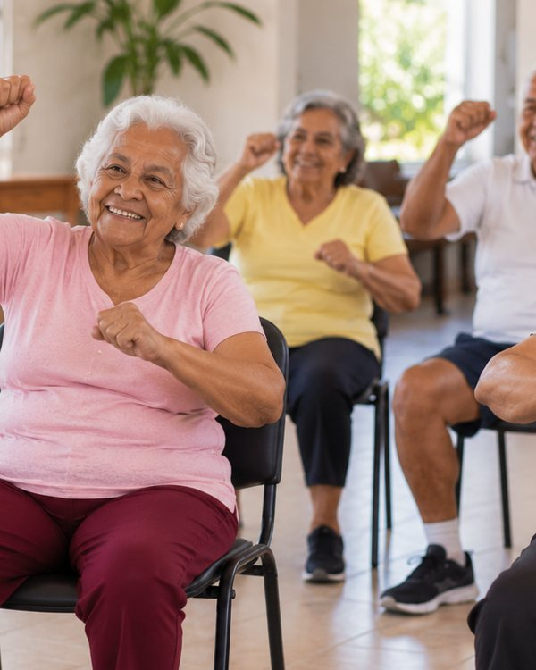
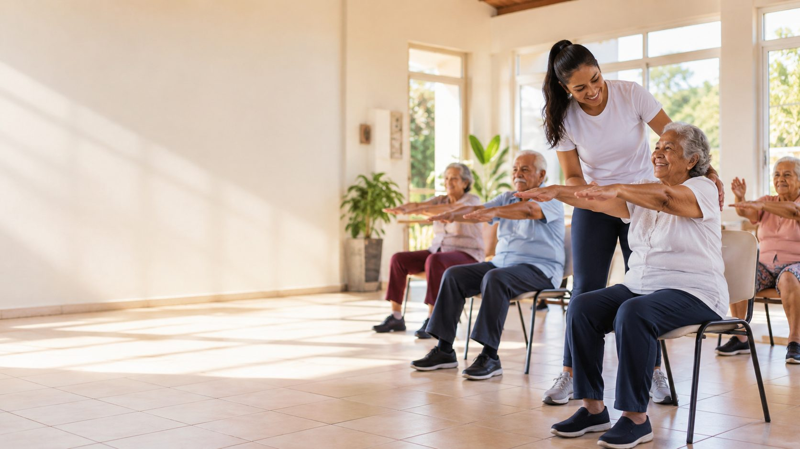
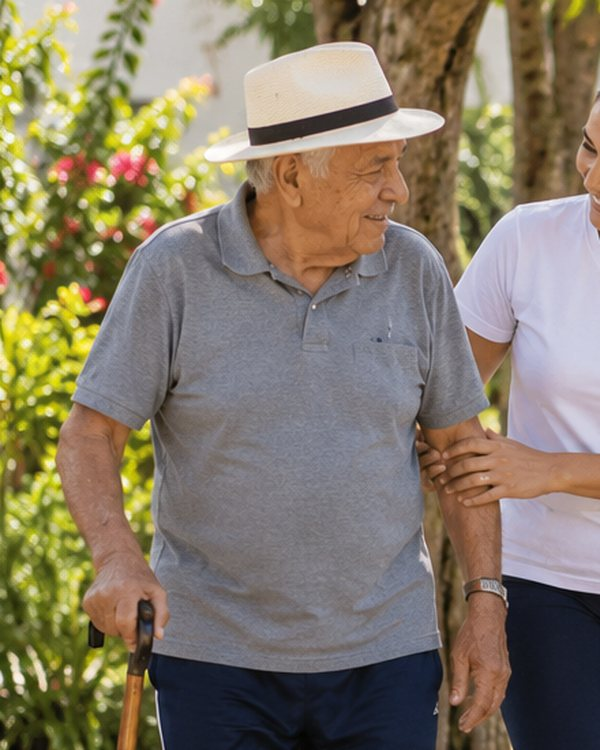
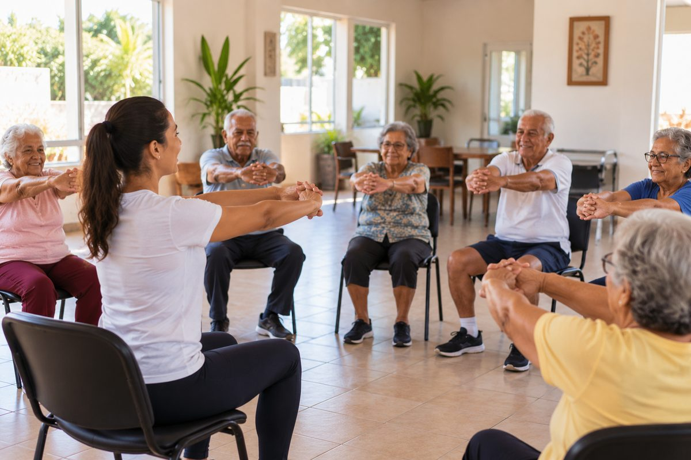
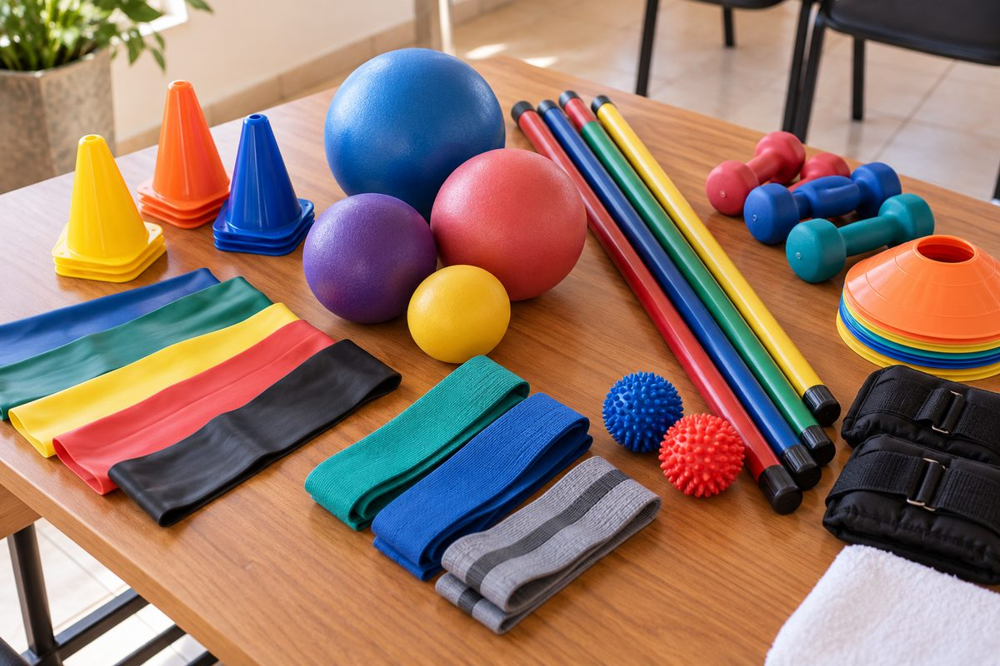
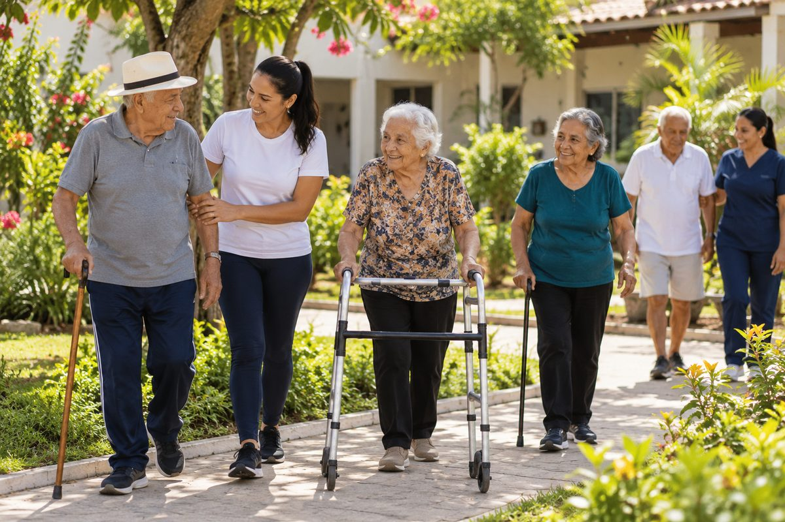
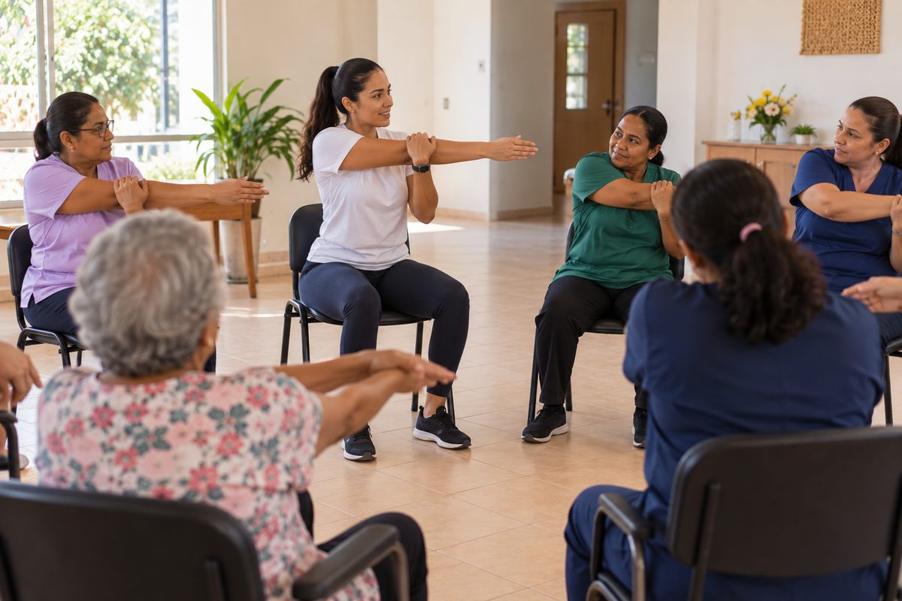
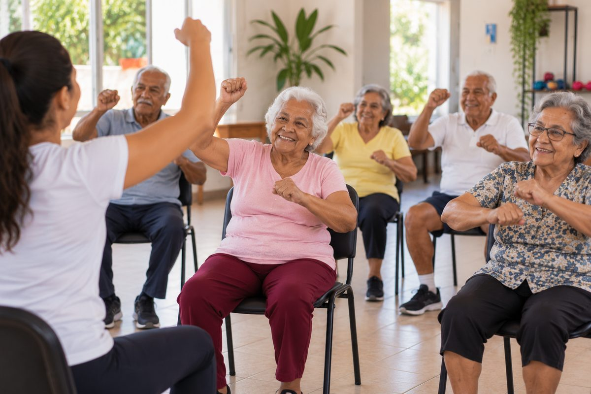

Quando cheguei aqui eu não levantava o braço para pentear o cabelo. Hoje sou a primeira a chegar na aula de quarta.

Cajazeiras, Paraíba
Levamos profissional, formação e material de exercício físico para as Instituições de Longa Permanência para Idosos (ILPIs). E ficamos até a própria casa conseguir seguir sozinha.
Aula de alongamento em uma das instituições parceiras
620 idosos se exercitaram toda semana em 14 instituições do sertão paraibano. 85 cuidadores aprenderam a conduzir as aulas, com o apoio de 40 voluntários.
Veja como chegamos láSobre nós
A população idosa cresce e, com ela, a procura por vagas em ILPIs. Porém, poucas dessas casas conseguem manter um programa de exercício físico que dure mais que alguns meses.
Fundada em 2019 em Cajazeiras, a Movimento Longevo nasceu para atacar o que faz esses programas pararem. Não levamos uma aula avulsa. Montamos a rotina junto com a instituição e só saímos quando ela já anda com as próprias pernas.

Quando cheguei aqui eu não levantava o braço para pentear o cabelo. Hoje sou a primeira a chegar na aula de quarta.

Eu passava o dia no quarto. Agora dou duas voltas no jardim antes do almoço, e a bengala é mais companhia do que apoio.
Antes eu tinha medo de machucar alguém. Depois da formação, eu mesma conduzo o alongamento nos dias em que a professora não vem.
O exercício deixou de ser um evento e virou rotina da casa. Hoje ele está no nosso planejamento e no nosso orçamento.
Uma equipe pequena, apoiada por dezenas de voluntários e pelos cuidadores de cada casa.
Diretora executiva, profissional de Educação Física
Coordena os programas nas instituições
Enfermeira, responsável pela formação de cuidadores
Parcerias e voluntariado
Nossos projetos
Cada frente responde a um dos obstáculos. Clique nas fotos para ver maior.

Aulas semanais com profissional habilitado, adaptadas a cada nível de mobilidade.

Faixas, bastões e bolas entregues a cada casa parceira.

Passeios guiados que unem exercício, sol e conversa.

A equipe da casa aprende a conduzir as atividades.
O exercício entra no planejamento e no orçamento.

Música para trabalhar o corpo, a memória e a alegria.
Conhecemos a casa, os moradores e a rotina da equipe.
Um voluntário assume as aulas duas vezes por semana.
Os cuidadores aprendem a conduzir os outros dias.
Acompanhamos por mais seis meses e passamos o bastão.
Como doar
A doação mensal é a que mais ajuda, porque deixa a gente planejar o ano inteiro de cada instituição. Prestamos contas todo ano.
Digite um valor a partir de R$ 10.
Com R$ 30 por mês você garante um kit de faixa elástica e bastão para quem está começando. Com R$ 80 por mês você paga 4 horas de aula com profissional em uma instituição. Com R$ 250 por mês você financia uma oficina de formação para os cuidadores de uma instituição. Todo valor conta. A cada R$ 20 você paga uma hora de aula com profissional.
Chave Pix (CNPJ fictício)
00.000.000/0001-00
Um clique seleciona a chave inteira. Depois é só copiar.
Você doa direto pelo app do seu banco. Não pedimos dados do cartão.
Antes de doar
Não achou o que procurava? Fale com a gente.
Sim. Envie o comprovante para doe@movimentolongevo.exemplo e mandamos o recibo em até cinco dias úteis, com o nome e o CPF que você informar.
Pode, a qualquer momento. A doação mensal é um Pix agendado no seu próprio banco, então basta cancelar o agendamento no aplicativo. Não há multa nem fidelidade.
Todo ano publicamos um relatório com o que entrou, o que saiu e quantas aulas aconteceram em cada casa parceira. A divisão de cada R$ 100 está logo acima, na seção de doação.
Para conduzir aulas, sim. Aceitamos profissionais e estudantes do último ano de Educação Física ou Fisioterapia, sempre com supervisão. Para eventos, comunicação e transporte, qualquer pessoa pode ajudar.
ILPIs da Paraíba podem se inscrever pelo formulário de contato, escolhendo o assunto "Sou gestor de uma ILPI". A primeira visita não tem custo para a instituição.
Contato
Se você cuida de uma ILPI, quer ser voluntário ou propor uma parceria, escreva para nós. Respondemos em até dois dias úteis.